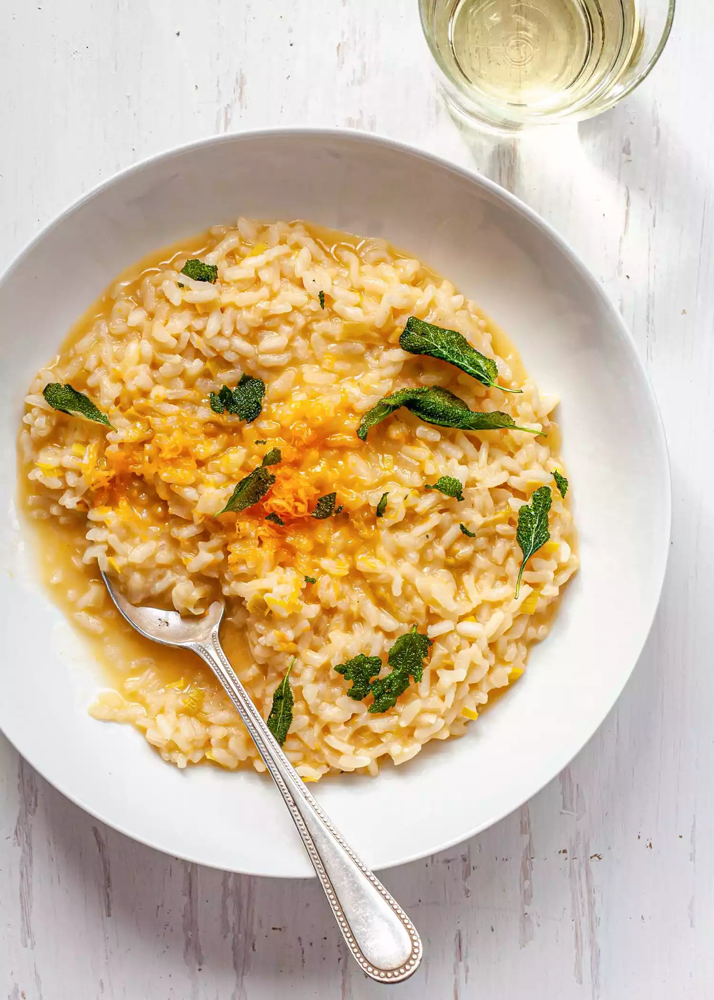

Odin Recipes

Risotto made just right!
Ingredients
- 3 tablespoons olive oil
- Leaves from 1 small bunch sage
- Few pinches coarse or flaky salt
- 1 medium leek
- 2 tablespoons unsalted butter
- 1/8 teaspoon salt, plus more to taste
- 1 1/2 cups Arborio rice
- 1/2 dry white wine
- 4 to 5 cups chicken or vegetable stock
- 3/4 cup (about 1 1/2 ounces) finely grated Mimolette, plus more for garnish
Instructions
- Fry sage to make garnish.
- Saute the leeks.
- Add the rice and wine.
- Add the stock.
- Finish the risotto.
Return to Main Page